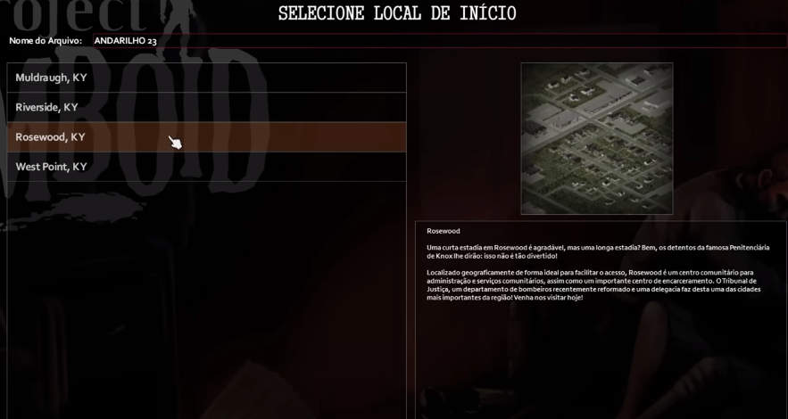
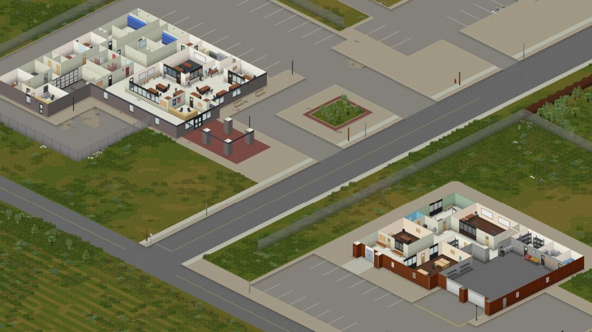
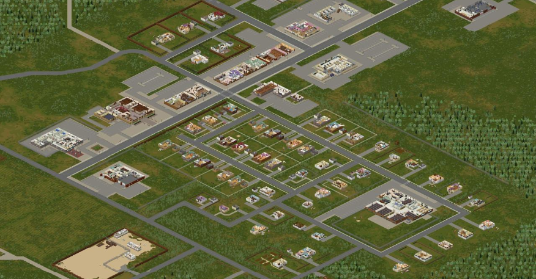
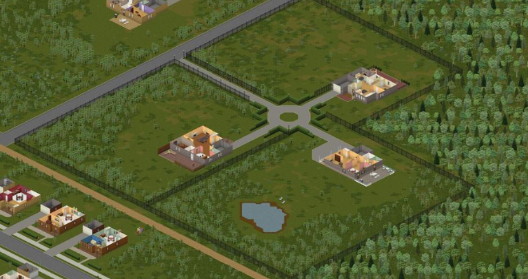
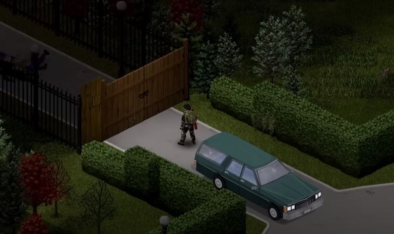
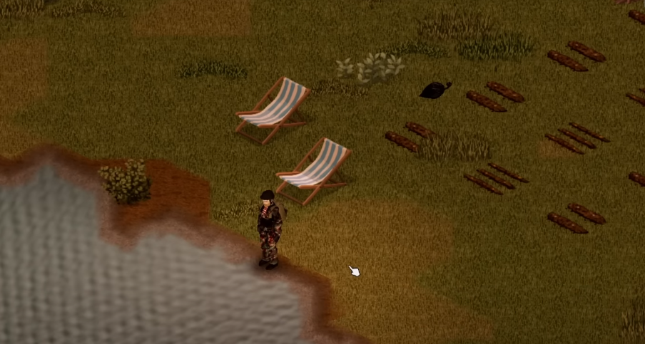

Spawn e onde criar uma Base?
Escolher uma cidade para iniciar pode ser um pouco difícil.
Qual cidade começar?
- Começar escolhendo a cidade Rosewood como sua cidade de Spawn inicial, pode ser uma otima escolha por varios motivos que fazem da cidade ideal para ter um desenvolvimento rápido. 
- Rosewood tem a menor população de zumbis entre as cidades de spawn, o que torna mais fácil explorar e coletar recursos sem ser atacado
- Rosewood tem vários pontos de interesse, como a estação de bombeiros, a delegacia de polícia, o tribunal, o supermercado e a clínica, que podem fornecer itens úteis, como armas, comida, medicamentos e ferramentas 
- Rosewood tem uma grande área residencial, com muitas casas que podem servir de base. As casas têm cozinha, banheiro, quarto e sala de estar, além de móveis que podem ser usados para barricar as janelas e portas
- Rosewood tem uma atmosfera tranquila e pacífica, com muitas árvores e gramados. Isso pode ajudar a reduzir o estresse e a depressão dos sobreviventes, que são fatores importantes para a saúde mental no jogo 
- construir uma base não é uma tarefa simples, pois requer planejamento, recursos e trabalho. Uma das questões que os jogadores devem considerar é onde começar a construção de uma base. Uma das opções é Louisville, a maior cidade de Project Zomboid, que possui uma grande variedade de edifícios e locais. Dentro da cidade, há uma mansão com três casas anexas, que pode ser transformada em um verdadeiro castelo impenetrável com apenas um portão na entrada. Essa mansão oferece muitas vantagens, como espaço, privacidade, luxo e defesa. 
- Para fechar a entrada da mansão, você precisa construir um portão de madeira ou metal. Você pode usar a carpintaria ou a metalurgia para fazer isso, respectivamente. Você vai precisar de alguns materiais, como tábuas, pregos, martelo, serra, barras de metal, soldador e tocha. 
- Além do portão, a mansão também tem outras vantagens para a sobrevivência. Uma delas é o lago que fica ao lado da mansão. Esse lago é uma fonte de água potável que você pode usar para beber, cozinhar ou regar suas plantas. Você só precisa ter um recipiente, como uma garrafa ou uma panela, para coletar a água. Você também pode pescar no lago se tiver uma vara de pescar e uma isca.
- Outra vantagem é o terreno que fica atrás da mansão. Esse terreno é ideal para fazer uma plantação de alimentos, como frutas, verduras e legumes. Você pode usar a agricultura para plantar sementes que você encontra em lojas ou casas. 
E onde criar minha base?
Portanto, a escolha de iniciar em Rosewood pode ser uma boa opção para os jogadores iniciantes ou intermediários que querem ter uma experiência de sobrevivência mais tranquila e segura no Project Zomboid. Rosewood oferece muitas vantagens, como baixa densidade de zumbis, variedade de loot, facilidade de construir uma base, acesso a outras áreas e clima agradável. No entanto, isso não significa que Rosewood seja um paraíso sem perigos.